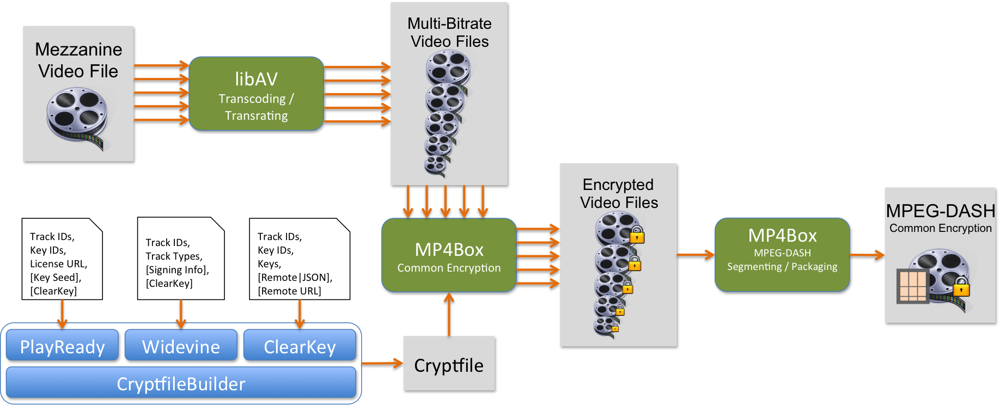

The W3C is currently developing two extensions to the HTML5 specification. MSE (Spec) allows playback of adaptive bitrate streams by introducing Javascript APIs that allow player applications to deliver individual video, audio, and data buffers to the browser’s media engine EME (Spec) allows playback of encrypted media by introducing Javascript APIs that allow player applications to perform encryption key management with a DRM-specific CDM embedded within the browser.
The motivation behind development of the CableLabs MSE-EME Reference Platform is to showcase the current landscape of support for these W3C extensions in the open source and proprietary technology arenas. More specifically, it contains working examples of content creation and encryption of MPEG DASH content along with subsequent playback of that content on supported web browsers.
For content creation, CableLabs uses several open source tools combined with some custom code to transrate/transcode a single input file, encrypt the output files with one or more of several supported DRM systems, and then segment and package those encrypted files according to the MPEG-DASH standard.
For playback of encrypted MPEG-DASH, we have a commercially available player base from Fraunhofer as well as our own dash.js-based player with modifications to highlight the EME process along with support for additional DRM systems.
All of the reference software is detailed in subsequent sections of this documentation.